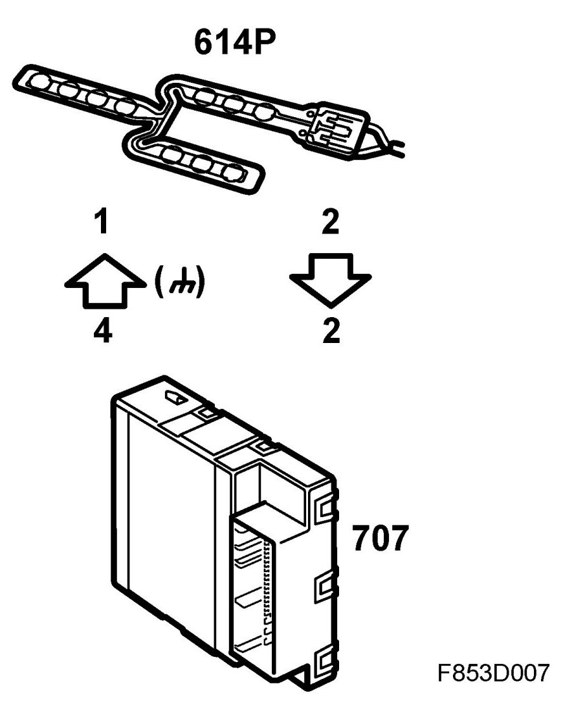
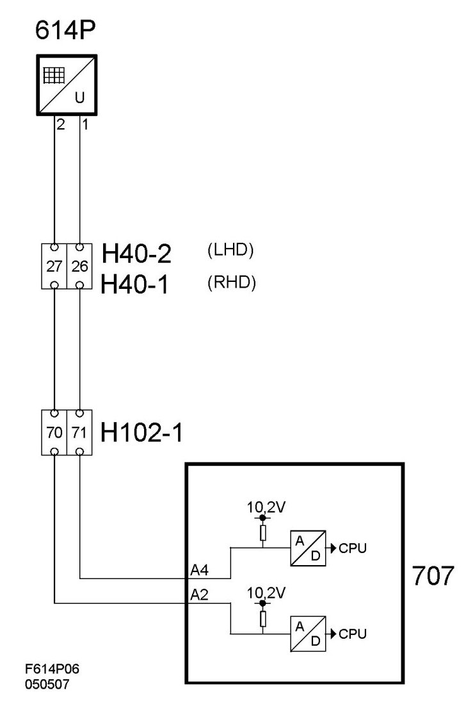

Occupied Seat Cushion Sensor, Passenger, Front (614P)
Occupied Seat Cushion Sensor, Passenger, Front (614P)
Location
Occupied seat cushion sensor, passenger, front (614P).
Main function
Used for seat-belt warning.
Type
The resistive sensor detects weight. 10 series-connected sensor elements are fused to a plastic film. In a unloaded state, the sensor has unlimited resistance. When the sensor resistance is lower than 45 ohms, it is determined that the seat is occupied. The sensor also contains a diode which is parallel-mounted with the 2 connector leads. The diode is used during periodic oxide burn-off in the sensor connectors.
Connection
One pin is grounded internally in the BCM while the other receives a 5V feed via a built-in control module resistance of 47 ohms. When weight is placed on the seat, the current load over resistance is reduced. The current value from the A/D sensor is converted and is then available in digital form. When the value is below 2.5V, it is surmised that the seat is occupied.


Burn-off:
The BCM sends a powerful current through the sensor to burn off any oxide in the connections for a duration of 600ms during ignition. The BCM feeds the sensor with a battery voltage via a 330 ohms resistor. Polarity is reversed during normal operation which allows the entire burn-off current to pass through a diode built into the sensor.